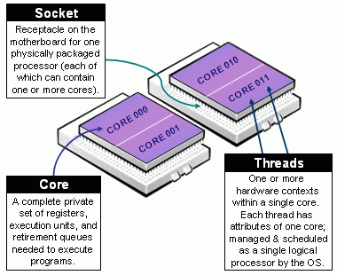

Slurm Resource and Job Management System¶
The UL HPC uses Slurm (formerly an acronym for Simple Linux Utility for Resource Management) cluster and workload management. The Slurm scheduler is a cluster workload manager and performs three main functions:
- allocates access to resources for fixed time intervals,
- provides a framework for starting, executing, and monitoring work on allocated resources, and
- maintains a priority queue that schedules and regulates access to resources.
Official docs Official FAQ ULHPC Tutorial/Getting Started
IEEE ISPDC22: ULHPC Slurm 2.0
If you want more details on the RJMS optimizations performed upon Aion acquisition, check out our IEEE ISPDC22 conference paper (21st IEEE Int. Symp. on Parallel and Distributed Computing) presented in Basel (Switzerland) on July 13, 2022.
IEEE Reference Format | ORBilu entry | slides
Sebastien Varrette, Emmanuel Kieffer, and Frederic Pinel, "Optimizing the Resource and Job Management System of an Academic HPC and Research Computing Facility". In 21st IEEE Intl. Symp. on Parallel and Distributed Computing (ISPDC'22), Basel, Switzerland, 2022.

Overview of the configuration of Slurm on UL HPC clusters¶
The main configuration options for Slurm that affect the resources that are available for jobs in UL HPC systems are the following.
- Queues/Partitions group nodes according to the set of hardware features they implement.
batch: default dual-CPU nodes. Limited to max:- 64 nodes, and
- 2 days walltime.
gpu: GPU nodes nodes. Limited to max:- 4 nodes, and
- 2 days walltime.
bigmem: large-memory nodes. Limited to max:- 1 node, and
- 2 days walltime.
interactive: floating partition across all node types allowing higher priority allocation for quicks tests. Best used in interactive allocations for code development, testing, and debugging. Limited to max:- 2 nodes, and
- 2h walltime.
- Queue policies/Quality of Service (QoS's) apply restrictions to resource access and modify job priority on top of (overriding) access restrictions and priority modifications applied by partitions.
- Cross-partition QoS's are tied to a priority level.
low: Priority 10 and max 300 jobs per user.normal: Priority 100 and max 100 jobs per user.high: Priority 200 and max 50 jobs per user.urgent: Priority 1000 and max 20 jobs per user.
- Special QoS's that control priority access to special hardware.
iris-hopper: Priority 100 and max 100 jobs per user.
- Long type QoS's have extended max walltime (
MaxWall) of 14 days and are defined per cluster/partition combination (<cluster>-<partition>-long).aion-batch-long: max 16 nodes and 8 jobs per user.iris-batch-long: max 16 nodes and 8 jobs per user.iris-gpu-long: max 2 nodes per and 4 jobs per user.iris-bigmem-long: max 2 nodes per and 4 jobs per user.iris-hopper-long: max 1 GPU per and 100 jobs per user.
- Special preemptible QoS for best-effort jobs.
besteffort: jobs in best effort OoS can be interrupted by jobs in any other QoS. The processes running during interruption are killed, so the executables use in best effort jobs require a custom checkpoint-restart mechanism.
- Cross-partition QoS's are tied to a priority level.
- Accounts organize user access to resources hierarchically. Accounts are associated to organization (like faculties), supervisors (multiple associations possible), and activities (like projects, and trainings).
- A default account is associated with all users affiliated with the University of Luxembourg.
- Users not associated with the University of Luxembourg must have access and specify an account association when allocating resources for a job.
- Users must use the proper account as resource usage is tracked and reported.
- Federated scheduling supports scheduling jobs across both
irisandaion.- A global policy (coherent job ID, global scheduling, etc.) is enforced within all UL HPC systems.
- Submission of jobs from one cluster to another is possible using the
-M, --cluster (aion|iris)option.
Features, partitions, and floating partitions
Features in Slurm are tags that correspond to hardware capabilities of nodes. For instance the volta flag in UL HPC system denotes that the node has GPUs of the Volta architecture.
Partitions are collections of nodes that usually have a homogeneous set of features. For instance all nodes of the GPU partition in UL HPC system have GPUs of the Volta architecture. As a result, partitions tend to be mutually exclusive sets.
Floating partitions contain nodes from multiple partitions. As a result, floating partitions have nodes with variable features. The -C, --constraint flag is available to filter nodes in floating partitions according to their features.
Jobs and resources¶
A job is the minimal independent unit of work in a Slurm cluster.
an allocation of resources such as compute nodes assigned to a user for an certain amount of time. Jobs can be interactive or passive (e.g., a batch script) scheduled for later execution.
The resources that the scheduler manages are physical entities like nodes, CPU cores, GPUs, access to special devices, but also system resources like and memory and I/O operations.
What characterize a job?
A user jobs have the following key characteristics:
- set of requested resources:
- number of computing resources: nodes (including all their CPUs and cores) or CPUs (including all their cores) or cores
- amount of memory: either per node or per CPU
- (wall)time needed for the users tasks to complete their work
- a requested node partition (job queue)
- a requested quality of service (QoS) level which grants users specific accesses
- a requested account for accounting purposes
Once a job is assigned a set of nodes, the user is able to initiate parallel work in the form of job steps (sets of tasks) in any configuration within the allocation.
When you login to a ULHPC system you land on a access/login node. Login nodes are only for editing and preparing jobs: They are not meant for actually running jobs. From the login node you can interact with Slurm to submit job scripts or start interactive jobs, which will be further run on the compute nodes.
Submit Jobs¶
Jobs in the Slurm scheduler are executed in batch or interactive mode. Batch jobs are executed asynchronously in the background, whereas interactive jobs allow the user to issue a command in an interactive manner, and even start a shell session. In both cases, the users must request resources for their job, including a finite amount of time for which they can occupy the compute resources.
Jobs executed in batch or interactive mode may contain srun commands to launch job steps. The job steps can run in sequence or in parallel given that enough resources are available in the job allocation or that resources can be shared. Access to resources such as nodes, memory, and accelerator devices, can be requested with appropriate partition and constraint options.
Executing a job in batch mode with sbatch¶
Batch job scripts are submitted to the scheduler with the sbatch command.
- The command adds a resource allocation request to the scheduler job queue together with a copy of a job launcher script to execute in the allocation. The command then exits.
- When the requested resources are available, a job is launched and the job script is executed in the first node of the allocated resources.
- The job allocation is freed when the job script finishes or the allocation times out.
The execution of the job script is thus asynchronous to the execution of the sbatch command.
Typical sbatch (batch job) options
To submit a bash job script to be executed asynchronously by the scheduler use the following sbatch command.
sbatch --partition=<partition> [--qos=<qos>] [--account=<account>] [...] <path/to/launcher_script.sh>
Accessing script from a submission script
If you reference any other script or program from the submission script, the ensure that the file referenced is accessible.
- Use the full path to the file referenced.
- Ensure that the file is stored in a networked file system and accessible from every node.
Example job submission
$ sbatch <path/to/launcher_script.sh>
submitted batch job 864933
Execute a job in interactive mode with salloc¶
Interactive jobs launched a command in an allocation of compute nodes with the salloc command.
- The
salloccommand submits a resources allocation request to the scheduler job queue, and blocks until the resources are available. - When the requested resources are available, a job is launched and the command provided to
sallocis executed on the first node of the allocated resources. - The allocation is freed when the command terminates, or the allocation times out.
The main difference of salloc from sbatch is that salloc runs for the whole duration of the command being executed in the allocation, that is salloc is a blocking version of sbatch.
Typical salloc (interactive job) options
To start an interactive job scheduler use the following salloc command.
sbatch --partition=<partition> [--qos=<qos>] [--account=<account>] [--x11] [...] [<commmand>]
salloc command will block until the requested resources are available, and when resources are available then it will the launch the <command> in the first node of the allocation. Upon job submission, Slurm print a message with the job's ID; the job ID is used to identify this job in all Slurm interactions.
Example interactive job submission
$ salloc --partition=batch --qos=normal --nodes=1 --time=8:00:00 bash --login -c 'echo "Hello, world!"'
salloc: Granted job allocation 9824090
salloc: Waiting for resource configuration
salloc: Nodes aion-0085 are ready for job
Hello, world!
salloc: Relinquishing job allocation 9824090
$
Launching interactive shell sessions with salloc¶
The <command> argument of salloc is optional. The default behavior in our site when no <command> is provided is for salloc to launch an interactive shell on the first node of the allocation. The shell session is configured to overlap, that is it is not consuming any resources from other job steps. The interactive session terminates with an exit command, or the allocation times out.
Example of launching an interactive shell
0 [username@access1 ~]$ salloc --partition=batch --qos=normal --nodes=1 --time=8:00:00
salloc: Granted job allocation 9805184
salloc: Nodes aion-0207 are ready for job
0 [username@aion-0207 ~](9805184 1N/T/1CN)$
Configuring the default behavior of salloc when no command is provided
If no command is provided then the behavior of salloc depends on the configuration of Slurm. The LaunchParameters option of Slurm configuration (slurm.conf) is a comma separated list of options for the job launch plugin. The use_interactive_step option has salloc launch a shell on the first node of the allocation; otherwise salloc launches a shell locally, in the machine where it was invoked.
The InteractiveStepOptions of Slurm configuration determines the command run by salloc when use_interactive_step is included in LaunchParameters. The default value is
--interactive --preserve-env --pty $SHELL"
--interactive creates an "interactive step" that will not consume resources so that other job steps may run in parallel with the interactive step running the shell. The --pty option is required when creating an implicit reservation for an interactive shell.
Note that --interactive is an internal potion and is not meant to be used outside setting the InteractiveStepOptions.
To create a allocation without launching any command, use the --no-shell option. Then salloc immediately exits after allocating job resources without running a command. Job steps can still be launched in the job allocation using the srun command with the --jobid=<job allocation id> command.
Implicit interactive job creation with srun¶
The srun is used to initiate parallel job steps within a job allocation. However, if srun is invoked outside an allocation, then
srunautomatically allocates a job in a blocking manner similar tosalloc, and- when the requested resources become available, it launches a single job step to run the provided command.
Launching interactive jobs with srun
To create an implicit job allocation and launch a job step with srun provide the usual options usually required by salloc or sbatch.
srun --partition=<partition> [--qos=<qos>] [--account=<account>] [...] <command>
Launching interactive shells with srun
To launch an interactive shell in an implicit job allocation, use the --pty option.
srun --partition=<partition> [--qos=<qos>] [--account=<account>] [...] --pty bash --login
--pty option instructs srun to execute the command in terminal mode in a pseudoterminal, so you can interact with bash as if it was launched in your terminal.
Note
In an interactive shell session created implicitly with srun, the shell occupies one of the available tasks (SLURM_NTASKS) in contrast to jobs launched with salloc and without command argument.
Specific Resource Allocation¶
Within a job, you aim at running a certain number of tasks, and Slurm allow for a fine-grain control of the resource allocation that must be satisfied for each task.
Beware of Slurm terminology in Multicore Architecture!

- Slurm Node = Physical node, specified with
-N <#nodes>- Advice: always explicit number of expected number of tasks per node using
--ntasks-per-node <n>. This way you control the node footprint of your job.
- Advice: always explicit number of expected number of tasks per node using
- Slurm Socket = Physical Socket/CPU/Processor
- Advice: if possible, explicit also the number of expected number of tasks per socket (processor) using
--ntasks-per-socket <s>.- relations between
<s>and<n>must be aligned with the physical NUMA characteristics of the node. - For instance on aion nodes,
<n> = 8*<s> - For instance on iris regular nodes,
<n>=2*<s>when on iris bigmem nodes,<n>=4*<s>.
- relations between
- Advice: if possible, explicit also the number of expected number of tasks per socket (processor) using
- (the most confusing): Slurm CPU = Physical CORE
- use
-c <#threads>to specify the number of cores reserved per task. - Hyper-Threading (HT) Technology is disabled on all ULHPC compute nodes. In particular:
- assume #cores = #threads, thus when using
-c <threads>, you can safely setto automatically abstract from the job contextOMP_NUM_THREADS=${SLURM_CPUS_PER_TASK:-1} # Default to 1 if SLURM_CPUS_PER_TASK not set - you have interest to match the physical NUMA characteristics of the compute node you're running at (Ex: target 16 threads per socket on Aion nodes (as there are 8 virtual sockets per nodes, 14 threads per socket on Iris regular nodes).
- assume #cores = #threads, thus when using
- use
The total number of tasks defined in a given job is stored in the $SLURM_NTASKS environment variable.
The --cpus-per-task option of srun in Slurm 23.11 and later
In the latest versions of Slurm srun inherits the --cpus-per-task value requested by salloc or sbatch by reading the value of SLURM_CPUS_PER_TASK, as for any other option. This behavior may differ from some older versions where special handling was required to propagate the --cpus-per-task option to srun.
In case you would like to launch multiple programs in a single allocation/batch script, divide the resources accordingly by requesting resources with srun when launching the process, for instance:
srun --cpus-per-task <some of the SLURM_CPUS_PER_TASK> --ntasks <some of the SLURM_NTASKS> [...] <program>
We encourage you to always explicitly specify upon resource allocation the number of tasks you want per node/socket (--ntasks-per-node <n> --ntasks-per-socket <s>), to easily scale on multiple nodes with -N <N>. Adapt the number of threads and the settings to match the physical NUMA characteristics of the nodes
16 cores per socket and 8 (virtual) sockets (CPUs) per aion node.
{sbatch|srun|salloc|si} [-N <N>] --ntasks-per-node <8n> --ntasks-per-socket <n> -c <thread>- Total:
<N>\times 8\times<n>tasks, each on<thread>threads - Ensure
<n>\times<thread>= 16 - Ex:
-N 2 --ntasks-per-node 32 --ntasks-per-socket 4 -c 4(Total: 64 tasks)
- Total:
14 cores per socket and 2 sockets (physical CPUs) per regular iris.
{sbatch|srun|salloc|si} [-N <N>] --ntasks-per-node <2n> --ntasks-per-socket <n> -c <thread>- Total:
<N>\times 2\times<n>tasks, each on<thread>threads - Ensure
<n>\times<thread>= 14 - Ex:
-N 2 --ntasks-per-node 4 --ntasks-per-socket 2 -c 7(Total: 8 tasks)
- Total:
28 cores per socket and 4 sockets (physical CPUs) per bigmem iris
{sbatch|srun|salloc|si} [-N <N>] --ntasks-per-node <4n> --ntasks-per-socket <n> -c <thread>- Total:
<N>\times 4\times<n>tasks, each on<thread>threads - Ensure
<n>\times<thread>= 28 - Ex:
-N 2 --ntasks-per-node 8 --ntasks-per-socket 2 -c 14(Total: 16 tasks)
- Total:
Job submission options¶
There are several useful environment variables set be Slurm within an allocated job.
The most important ones are detailed in the below table which summarizes the main job submission options offered with {sbatch | srun | salloc} [...]:
| Command-line option | Description | Example |
|---|---|---|
-N <N> |
<N> Nodes request |
-N 2 |
--ntasks-per-node=<n> |
<n> Tasks-per-node request |
--ntasks-per-node=28 |
--ntasks-per-socket=<s> |
<s> Tasks-per-socket request |
--ntasks-per-socket=14 |
-c <c> |
<c> Cores-per-task request (multithreading) |
-c 1 |
--mem=<m>GB |
<m>GB memory per node request |
--mem 0 |
-t [DD-]HH[:MM:SS]> |
Walltime request | -t 4:00:00 |
-G <gpu> |
<gpu> GPU(s) request |
-G 4 |
-C <feature> |
Feature request (broadwell,skylake...) |
-C skylake |
-p <partition> |
Specify job partition/queue | |
--qos <qos> |
Specify job qos | |
-A <account> |
Specify account | |
-J <name> |
Job name | -J MyApp |
-d <specification> |
Job dependency | -d singleton |
--mail-user=<email> |
Specify email address | |
--mail-type=<type> |
Notify user by email when certain event types occur. | --mail-type=END,FAIL |
At a minimum a job submission script must include number of nodes, time, type of partition and nodes (resource allocation constraint and features), and quality of service (QOS). If a script does not specify any of these options then a default may be applied. The full list of directives is documented in the man pages for the sbatch command (see. man sbatch).
#SBATCH directives vs. CLI options¶
Each option can be specified either as an #SBATCH [...] directive in the job submission script:
#!/bin/bash -l # <--- DO NOT FORGET '-l'
### Request a single task using one core on one node for 5 minutes in the batch queue
#SBATCH -N 2
#SBATCH --ntasks-per-node=1
#SBATCH -c 1
#SBATCH --time=0-00:05:00
#SBATCH -p batch
# [...]
Or as a command line option when submitting the script:
$ sbatch -p batch -N 2 --ntasks-per-node=1 -c 1 --time=0-00:05:00 ./first-job.sh
The command line and directive versions of an option are equivalent and interchangeable: if the same option is present both on the command line and as a directive, the command line will be honored. If the same option or directive is specified twice, the last value supplied will be used. Also, many options have both a long form, eg --nodes=2 and a short form, eg -N 2. These are equivalent and interchangable.
Common options to sbatch and srun
Many options are common to both sbatch and srun, for example sbatch -N 4 ./first-job.sh allocates 4 nodes to first-job.sh, and srun -N 4 uname -n inside the job runs a copy of uname -n on each of 4 nodes. If you don't specify an option in the srun command line, srun will inherit the value of that option from sbatch. In these cases the default behavior of srun is to assume the same options as were passed to sbatch. This is achieved via environment variables: sbatch sets a number of environment variables with names like SLURM_NNODES and srun checks the values of those variables. This has two important consequences:
- Your job script can see the settings it was submitted with by checking these environment variables
- You should NOT override these environment variables. Also be aware that if your job script tries to do certain tricky things, such as using
sshto launch a command on another node, the environment might not be propagated and your job may not behave correctly
HW characteristics and Slurm features of ULHPC nodes¶
When selecting specific resources allocations, it is crucial to match the hardware characteristics of the computing nodes. Details are provided below:
| Node (type) | #Nodes | #Socket / #Cores | RAM [GB] | Features |
|---|---|---|---|---|
aion-[0001-0354] |
354 | 8 / 128 | 256 | batch,epyc |
iris-[001-108] |
108 | 2 / 28 | 128 | batch,broadwell |
iris-[109-168] |
60 | 2 / 28 | 128 | batch,skylake |
iris-[169-186] (GPU) |
18 | 2 / 28 | 768 | gpu,skylake,volta |
iris-[191-196] (GPU) |
6 | 2 / 28 | 768 | gpu,skylake,volta32 |
iris-[187-190] (Large-Memory) |
4 | 4 / 112 | 3072 | bigmem,skylake |
As can be seen, Slurm [features] are associated to ULHPC compute nodes and permits to easily filter with the -C <feature> option the list of nodes.
To list available features, use sfeatures:
sfeatures
# sinfo -o '%20N %.6D %.6c %15F %12P %f'
# NODELIST NODES CPUS NODES(A/I/O/T) PARTITION AVAIL_FEATURES
# [...]
Always try to align resource specifications for your jobs with physical characteristics
The typical format of your Slurm submission should thus probably be:
sbatch|srun|... [-N <N>] --ntasks-per-node <n> -c <thread> [...]
sbatch|srun|... [-N <N>] --ntasks-per-node <#sockets * s> --ntasks-per-socket <s> -c <thread> [...]
<N>\times<n> TASKS (first form) or <N>\times \#sockets \times<s> TASKS (second form), each on <thread> threads. :octicons-alert: You MUST ensure that either:
<n>\times<thread>matches the number of cores avaiable on the target computing node (first form), or<n>=\#sockets \times<s>, and<s>\times<thread>matches the number of cores per socket available on the target computing node (second form).
16 cores per socket and 8 virtual sockets (CPUs) per aion node. Depending on the selected form, you MUST ensure that either <n>\times<thread>=128, or that <n>=8<s> and <s>\times<thread>=16.
### Example 1 - use all cores available
{sbatch|srun|salloc} -N 2 --ntasks-per-node 32 --ntasks-per-socket 4 -c 4 [...]
# Total: 64 tasks (spread across 2 nodes), each on 4 cores/threads
### Example 2 - use all cores available
{sbatch|srun|salloc} --ntasks-per-node 128 -c 1 [...]
# Total; 128 (single-core) tasks
### Example 3 - use all cores available
{sbatch|srun|salloc} -N 1 --ntasks-per-node 8 --ntasks-per-socket 1 -c 16 [...]
# Total: 8 tasks, each on 16 cores/threads
### Example 4 - use all cores available
{sbatch|srun|salloc} -N 1 --ntasks-per-node 2 -c 64 [...]
# Total: 2 tasks, each on 64 cores/threads
14 cores per socket and 2 sockets (physical CPUs) per regular iris node. Depending on the selected form, you MUST ensure that either <n>\times<thread>=28, or that <n>=2<s> and <s>\times<thread>=14.
### Example 1 - use all cores available
{sbatch|srun|salloc} -N 3 --ntasks-per-node 14 --ntasks-per-socket 7 -c 2 [...]
# Total: 42 tasks (spread across 3 nodes), each on 2 cores/threads
### Example 2 - use all cores available
{sbatch|srun|salloc} -N 2 --ntasks-per-node 28 -c 1 [...]
# Total; 56 (single-core) tasks
### Example 3 - use all cores available
{sbatch|srun|salloc} -N 2 --ntasks-per-node 2 --ntasks-per-socket 1 -c 14 [...]
# Total: 4 tasks (spread across 2 nodes), each on 14 cores/threads
28 cores per socket and 4 sockets (physical CPUs) per bigmem iris node. Depending on the selected form, you MUST ensure that either <n>\times<thread>=112, or that <n>=4<s> and <s>\times<thread>=28.
### Example 1 - use all cores available
{sbatch|srun|salloc} -N 1 --ntasks-per-node 56 --ntasks-per-socket 14 -c 2 [...]
# Total: 56 tasks on a single bigmem node, each on 2 cores/threads
### Example 2 - use all cores available
{sbatch|srun|salloc} --ntasks-per-node 112 -c 1 [...]
# Total; 112 (single-core) tasks
### Example 3 - use all cores available
{sbatch|srun|salloc} -N 1 --ntasks-per-node 4 --ntasks-per-socket 1 -c 28 [...]
# Total: 4 tasks, each on 28 cores/threads
Using Slurm Environment variables¶
Recall that the Slurm controller will set several SLURM_* variables in the environment of the batch script. The most important are listed in the table below - use them wisely to make your launcher script as flexible as possible to abstract and adapt from the allocation context, "independently" of the way the job script has been submitted.
| Submission option | Environment variable | Typical usage |
|---|---|---|
-N <N> |
SLURM_JOB_NUM_NODES orSLURM_NNODES |
|
--ntasks-per-node=<n> |
SLURM_NTASKS_PER_NODE |
|
--ntasks-per-socket=<s> |
SLURM_NTASKS_PER_SOCKET |
|
-c <c> |
SLURM_CPUS_PER_TASK |
OMP_NUM_THREADS=${SLURM_CPUS_PER_TASK} |
SLURM_NTASKSTotal number of tasks |
srun -n $SLURM_NTASKS [...] |